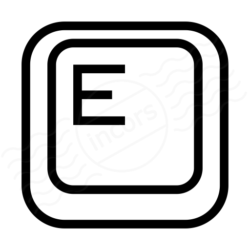

×
Buttons to move the player inside the environment.
 Button to grab objects from the ground.
 Button to change the camera control if possible.
Button to change the camera control if possible.
 Button to turn on the light of the toarch when grabbed from the ground.
Button to turn on the light of the toarch when grabbed from the ground.
Move the mouse to move the camera and the torch in first person control.